156原场＋50新日期，一次真实推理；68个完整有效场精确保持原CS。0拟合；未叠加path/map/tensor。
结果与风险 · 背景/逐带参考变化来源 · 输入小亮对象实际变化
S19_dandong_1601A_2019-10-03：CS 29.0986 → 有效域CS 25.7710，改变 4 格。变化不等同PM误差降低。
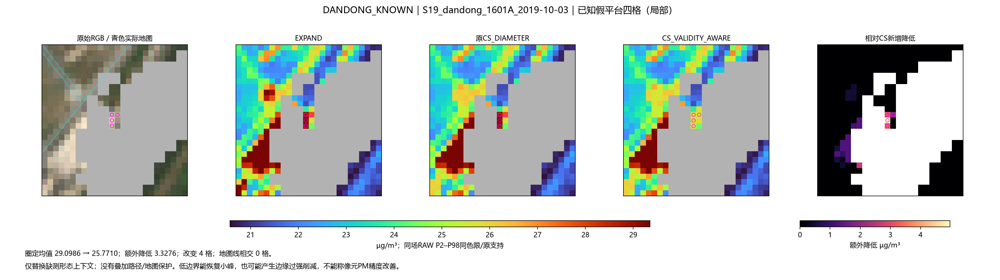
S19_dandong_1601A_2019-10-03：CS 29.0986 → 有效域CS 25.7710，改变 4 格。变化不等同PM误差降低。
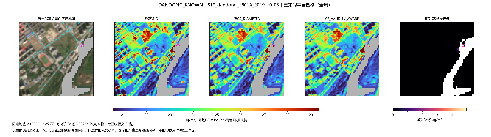
S19_dandong_1601A_2019-05-11：CS 41.0839 → 有效域CS 33.7049，改变 1 格。变化不等同PM误差降低。
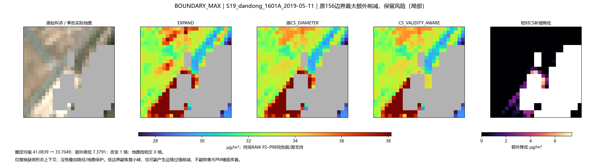
S19_dandong_1601A_2019-05-11：CS 41.0839 → 有效域CS 33.7049，改变 1 格。变化不等同PM误差降低。
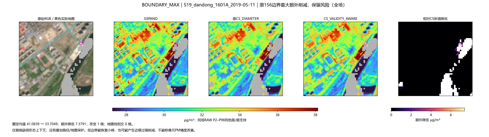
S03_daqing_1793A_2021-01-03：CS 25.4492 → 有效域CS 22.2859，改变 8 格。变化不等同PM误差降低。
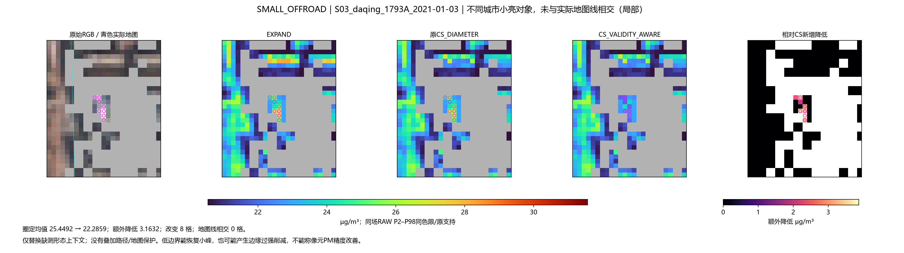
S25_linfen_3018A_2021-09-12：CS 34.3816 → 有效域CS 33.6912，改变 1 格。变化不等同PM误差降低。
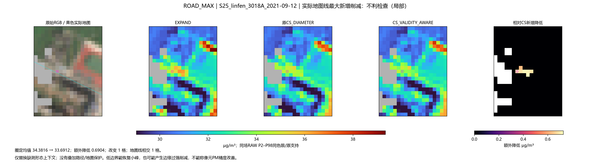
S25_linfen_3018A_2021-09-12：CS 34.3816 → 有效域CS 33.6912，改变 1 格。变化不等同PM误差降低。
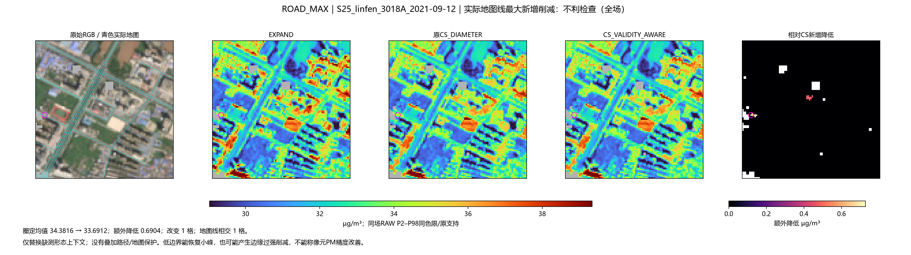
EVENT_S30_yongzhou_2478A_2020-07-31：CS 20.7048 → 有效域CS 17.4798，改变 1 格。变化不等同PM误差降低。
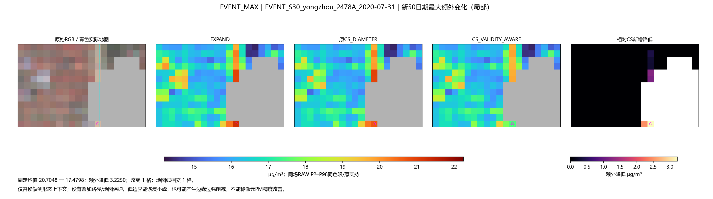
S01_beijing_1012A_2021-02-21：CS 27.1217 → 有效域CS 27.1217，改变 0 格。变化不等同PM误差降低。
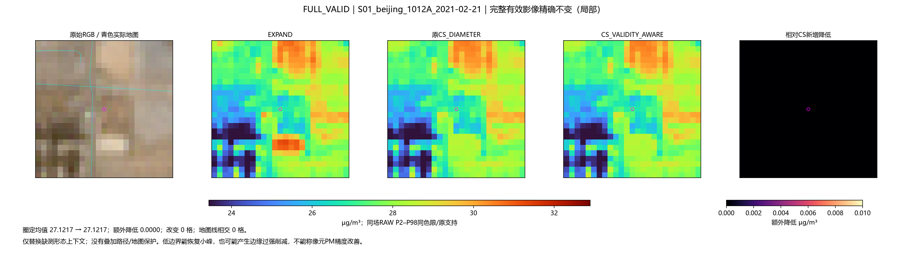
anshan_2019-10-01：CS 36.4578 → 有效域CS 34.7098；不能把该处地物外观作为排放真值。
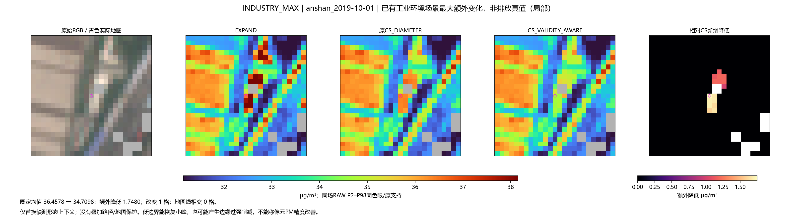
AC01核心均值CS 34.9329 → 有效域CS 34.4714，额外降.4615；对比度额外下降.4493。该对象是OSM住宅地块浅色屋顶候选，不是工业PM真值。必须与小亮缓解图一起阅读。
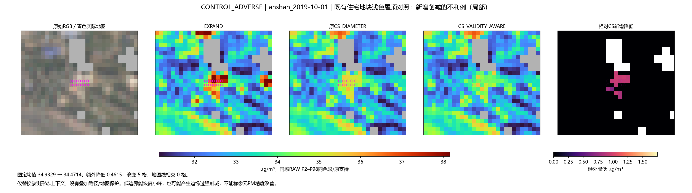
AC01核心均值CS 34.9329 → 有效域CS 34.4714，额外降.4615；对比度额外下降.4493。该对象是OSM住宅地块浅色屋顶候选，不是工业PM真值。必须与小亮缓解图一起阅读。
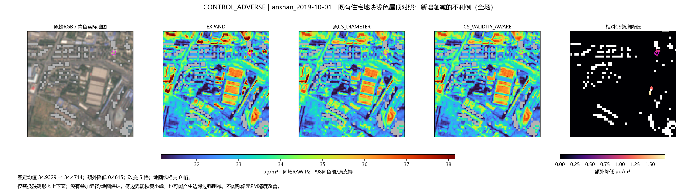